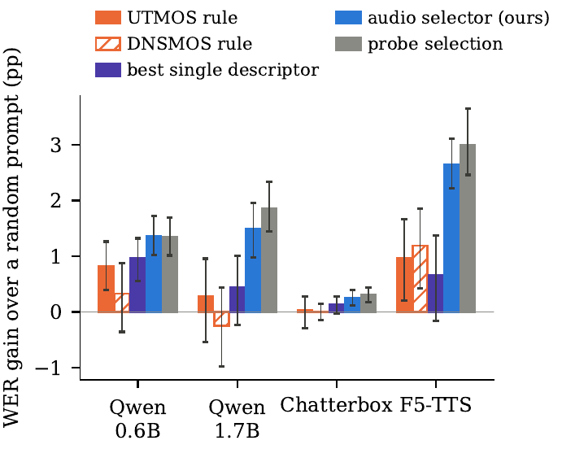
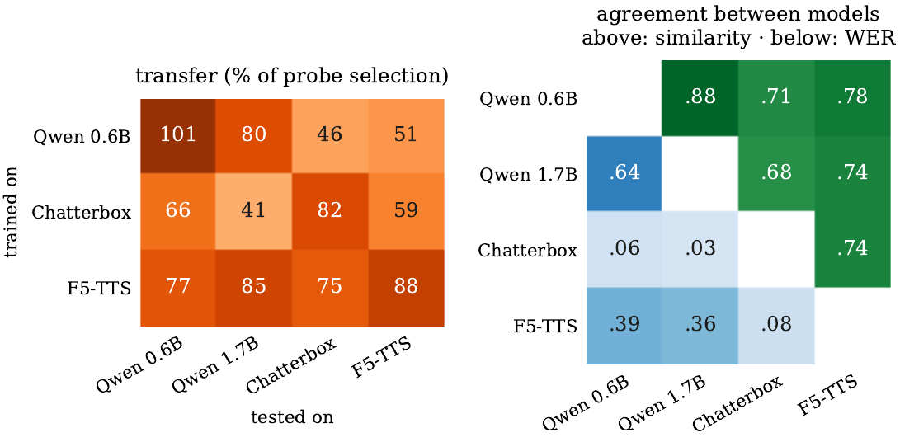
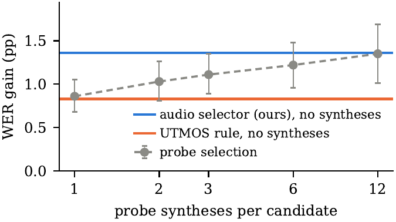
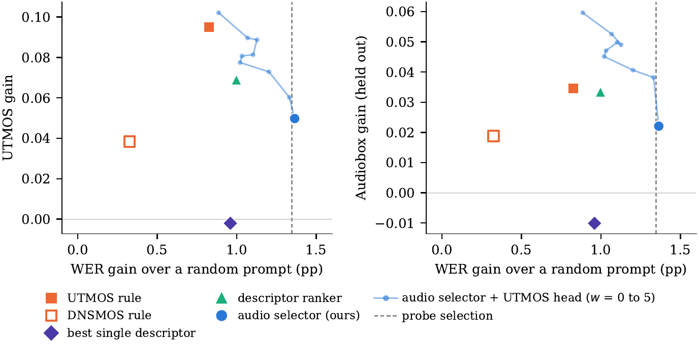

Zero-shot text-to-speech (TTS) models clone a target voice from a short reference clip, commonly referred to as the prompt. In practice, the prompt has to be cut from a longer recording of the speaker, so which part to use must be chosen. To understand what makes a good prompt, we analyze hundreds of thousands of outputs synthesized by four TTS models from candidate prompts of YouTube recordings. The choice of prompt substantially changes intelligibility, naturalness and speaker similarity. Standard predicted-quality scores capture mainly the naturalness part but miss most of the intelligibility gain. We find that the models largely agree on which prompt yields the highest measured speaker similarity, but much less on which prompt yields intelligible speech. We propose a small network that learns from the outputs a TTS model produced to rank a recording's candidate prompts from their audio alone. Without synthesizing anything at selection time, it picks prompts that lower the word error rate on held-out recordings by a third (Qwen3-TTS) to two fifths (F5-TTS) relative to a randomly chosen prompt, more than predicted quality achieves and nearly as much as synthesizing a dozen test sentences from every candidate first.
Benchmarks hand every test sentence its prompt. Real use does not: a user has a video, a podcast or a voice message of the speaker, and has to decide which few seconds to give the model. We judge a prompt by the speech it leads to. For over 1,500 YouTube recordings, we cut 30 s of the speaker's voice into 19 candidate prompts (3, 5 and 10 s), synthesize held-out sentences from every candidate with four open TTS models (Qwen3-TTS 0.6B and 1.7B, F5-TTS, Chatterbox), and score every output for intelligibility, naturalness and speaker similarity.
Choosing a recording's best 3 s prompt by test syntheses lowers WER by about a third for Qwen3-TTS and by half for F5-TTS, and also improves naturalness and speaker similarity. Part of this is a stable property of the prompt: for a fixed sentence, a sizeable share of the variation between outputs is due to the prompt rather than the seed.
Picking the candidate with the best UTMOS or DNSMOS score improves mainly naturalness and recovers only part of the intelligibility gain. It also looks better than it is when the same predictor judges the outputs: by a held-out judge (Audiobox Aesthetics), much of its naturalness gain disappears. When candidates differ in added noise, the quality rule picks the clean version, yet our picks are still more intelligible.
The four models largely agree on which prompt yields the highest measured speaker similarity, but much less on which yields intelligible speech, which depends on how a model uses its prompt (Chatterbox, which does not read the prompt transcript, agrees with neither). Selection for intelligibility is therefore best learned for each model.

Synthesizing from every candidate tells us which prompt is good, but it is too costly to repeat for every new speaker. We therefore learn to predict it, once per TTS model. A small network hears only the candidates' audio and is trained to rank a recording's candidates in the order of the outcomes the model produced from them. At selection time it scores the candidates and keeps the best one, with no synthesis at all.
The network predicts several outcomes of each candidate (mean WER, WER rank within the recording, failure rate, UTMOS, DNSMOS and speaker similarity) and selects by the WER rank, since intelligibility is what predicted quality misses. Adding its UTMOS output with a small weight trades back some predicted naturalness without retraining.
On held-out recordings, the selector lowers WER by 32% (Qwen3-TTS 0.6B) to 43% (F5-TTS) relative to a randomly chosen prompt, without synthesizing anything at selection time. On Qwen3-TTS this matches probe selection, which needs 228 syntheses per recording, and on F5-TTS it gains 2.7 times as much as choosing by UTMOS.


@article{turetzky2026prompt,
title = {What Makes a Good Audio Prompt for Zero-Shot {TTS}? Learning Prompt Selection from Synthesis Outcomes},
author = {Turetzky, Arnon and Adi, Yossi},
journal = {arXiv preprint arXiv:2610.40372},
year = {2026}
}